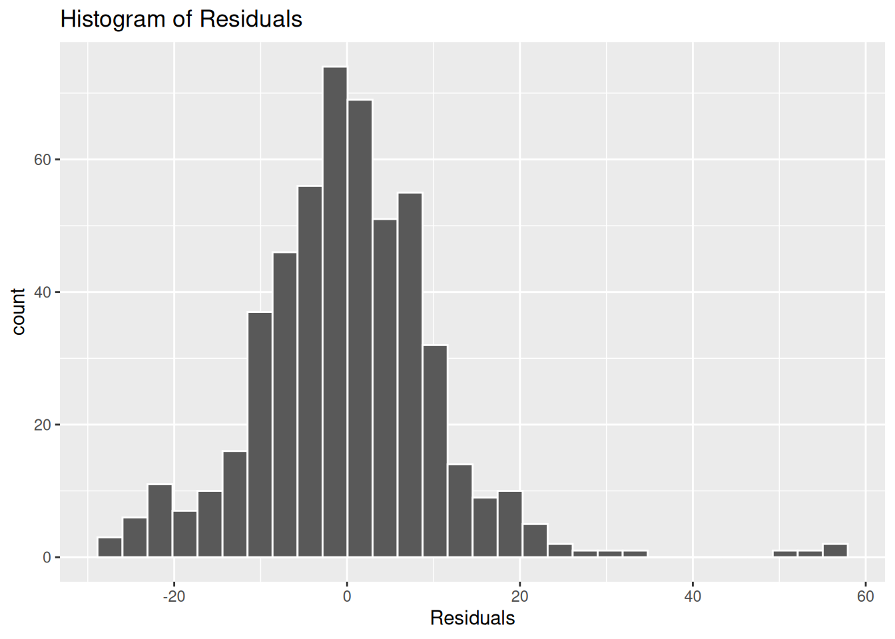
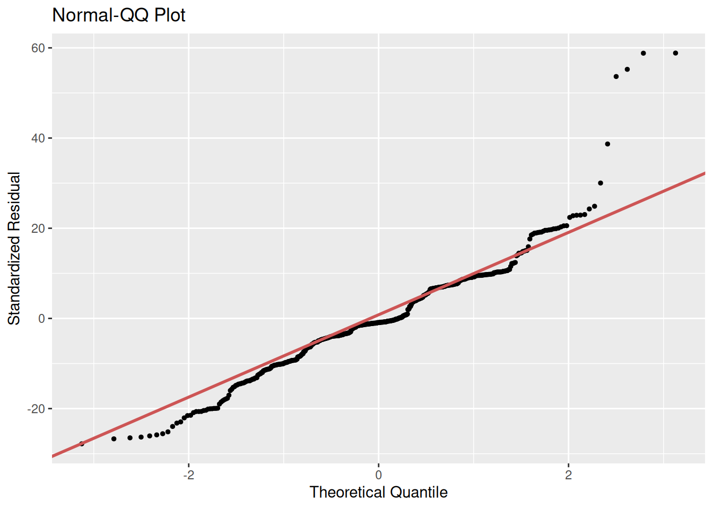

Run in Console
install.packages("lindia")Welcome back! This week we are continuing with multiple linear regression. Last week we ended on the mystery of why our model had fewer observations than in the full nilt data frame. We will start by exploring what contributed to the drop in observations, and how the example illustrates important things to be aware of when analysing data.
After that, we will shift our focus to the model as a whole. This includes interpreting model fit statistics, which we first introduced when exploring simple linear regression, but will now expand upon in relation to multiple linear regression. We will also briefly cover the main assumptions that our model needs to satisfy.
You will see in the recommended chapter from Fogarty for this week’s reading list that there is a vast diversity of checks you can do for whether assumptions are satisfied or violated. Do not worry, we do not expect you to go through all of those checks in the assessment. Similarly, all the possible ways to address any issues with assumptions not being satisfied goes beyond what is covered on this module - and you’ll see Fogarty says the same for his book. For the assignment, it is more important to recognise any implications and limitations for your interpretation rather than proposing the exact specific ways it could be addressed.
By the end of this week’s lab, you will know how to:
Alasdair: The content for the lab workbook this week is almost entirely new. In previous years we only had 10 rather than 11 labs. Unfortunately, due to this - especially given time available to proof read - the full extent of my dyslexia may be more apparent than usual. Apologies for any glaring spelling mistakes, substituted words, and diabolical use of grammar.
We will continue using our same ‘Lab-9-10-Multiple-Linear-Regression.Rmd’ file we created last week. If you missed Lab 9, use the time in the lab today to catch up with it as what we are covering today is ‘part 2’ on the same topic.
The only setup then for this week is installing a package:
Run in Console
install.packages("lindia")Lindia extends ggplot2 to add a diverse variety of plots that can be used in linear model diagnostics. As it is a smaller package, the usual auto-generated links we use in the lab workbook are not working for it. However, the documentation is available on R Documentation.
You might also want to take a quick skim of the GitHub page to see all it is capable of. Do not worry though we are not expecting you to use all of these. Indeed, there would not be room either to include all of these within the assessment. In terms of the assessment a key model diagnostic would be a histogram of residuals. Due to that, within the space and time available in the lab workbook, we will cover that specific diagnostic. Within the key Fogarty chapter reading for this week you will find explanations and examples of the rest as well as other packages and functions can use for model diagnostics.
Back to our setup then. We also want to add the following to our preamble codechunk at the top of our RMarkdown file:
Let’s pick up then where we left off last week. Within Lab 9 we ended on a small puzzle. Our multiple regression model despite only containing three independent variables (age, gender, any self-reported health condition) and one dependent variable (number of hours work per week) had “638 observations deleted due to missingness”.
As a wee reminder, we had started with the question of whether gender influences the number of hours worked per week. Based on our imaginary reading of the literature we had also decided to include age and any self-reported health condition as control variables.
This gave us the following model and results:
Call:
lm(formula = rhourswk ~ rsex + rage + anyhcond, data = nilt)
Residuals:
Min 1Q Median 3Q Max
-27.812 -5.346 -0.923 6.972 58.848
Coefficients:
Estimate Std. Error t value Pr(>|t|)
(Intercept) 39.82244 2.60505 15.287 <2e-16 ***
rsexFemale -11.05924 0.92931 -11.901 <2e-16 ***
rage -0.03270 0.03827 -0.854 0.393
anyhcondNo 2.47421 1.90816 1.297 0.195
---
Signif. codes: 0 '***' 0.001 '**' 0.01 '*' 0.05 '.' 0.1 ' ' 1
Residual standard error: 11.02 on 562 degrees of freedom
(638 observations deleted due to missingness)
Multiple R-squared: 0.205, Adjusted R-squared: 0.2007
F-statistic: 48.3 on 3 and 562 DF, p-value: < 2.2e-16This drop in observations is common with regression modelling. In calculating the results R does ‘listwise deletion’, dropping all rows for the variables that contain missing values. This can happen for perfectly valid reasons, and if we had read through the documentation for our selected variables and explored the data before building our model large drops, even as large as we have here, may not have come as a surprise.
However, when we are surprised by the drop in observations, how can we start checking the reasons behind it? The most immediate thing to check is the number of missing values for the variables in the model -
nilt |>
select(rhourswk, rsex, rage, anyhcond) |>
summary() rhourswk rsex rage anyhcond
Min. : 4.00 Male :537 Min. :18.00 Not answered/refused: 0
1st Qu.: 25.25 Female:667 1st Qu.:35.00 Yes :289
Median : 37.00 Median :48.00 No :909
Mean : 35.09 Mean :49.62 NA's : 6
3rd Qu.: 40.00 3rd Qu.:64.00
Max. :100.00 Max. :97.00
NA's :638 NA's :3 We can see that rhourswk has 638 missing values. Why is this the case? We can find the answer on page 9 in the NILT Teaching Resources documentation and page 40 of the NILT Main Questionnaire.
The question used to collect data for the rhourswk variable was “How many hours per week do you normally work in your job?” and was only asked if the participant said they were in employment in response to an earlier question. In other words, everyone who was not in employment will have an NA value for rhourswk.
As highlighted last week, it may have seemed odd based on the literature that whether someone had a self-identified health condition or not was not significantly correlated with number of hours worked per week. Now that we know rhourswk was the main contributor to the drop in observations, we can also take a quick look at what impact this had on our anyhcond variable.
| Variable | N | Percent | N | Percent |
|---|---|---|---|---|
| rhourswk_missing | 289 | 909 | ||
| ... No | 36 | 12% | 530 | 58% |
| ... Yes | 253 | 88% | 379 | 42% |
What we can see is of those with a health condition, 88% were dropped from our model as their value for rhourswk was NA (missing data), with only 36 respondents with a health condition actually included in the model.
How would we address such issues in our analysis? A question that may have sprung to mind is - Could we not just modify the missing values for rhourswk to ‘0’? That may initially seem sensible given we are interested in number of hours worked not whether someone is in work. However, whilst that may seem intuitive, depending on the data - and as will see especially here - it can often be a mistake.
(You’ll also notice from page 9 of the NILT Teaching Resources that rhourswk has two NA values, “-9 Non Applicable” and “-999 Not answered/refused”. In practice, you would want to only modify “-9 Non Applicable” - the value used if the question was not asked - but as we are demonstrating here why modifying NA to 0 is a bad idea for variables like rhourswk we will put that to the side for the moment.)
From a sneaky wee test I ran of the regression results after changing NA to 0 in rhourswk, I can confirm that making such a change does produce a model where all the coefficients are significant. And yet, that only adds to reasons for suspecting there is an issue in making such a change - and a good example of why not to make simplistic good/bad assessments of models based on whether the results are significant or not.
Whether your results are significant is entirely separate from whether your model is good/bad. It is always possible for even research following best practice to have results that are not significant, whereas it is very easy through bad practice - whether intentional or not - to get apparently significant results.
Throughout all stages of the research, researchers need to maintain awareness of how any actions they perform on the data impacts and shapes the results, and what implications that has for the analysis and findings.
If we start thinking through what happens if we modify the data the problem starts to become clear: We had 638 observations removed from our model, more than the number remaining within it. What are we then effectively doing by including those not in employment as ‘0’ within rhourswk? …
We are heavily skewing our data - to a comical level. Recall how in Labs 4 and 6 that we emphasised the importance of checking the distribution of our data. Let’s see how changing NA to 0 would impact the distribution of rhourswk.
Before:
# Histogram of our dependent variable
nilt |> ggplot(aes(x=rhourswk)) +
geom_histogram()
After:
# Coerce missing values to 0
nilt <- nilt |>
mutate(
rhourswk2 = replace_na(rhourswk, 0)
)
# Histogram of our dependent variable
nilt |> ggplot(aes(x=rhourswk2)) +
geom_histogram()
We have effectively turned our dependent numeric variable into a messy categorical + numeric variable - “is the respondent in work or not” and “if so, how many hours per week are they working”. As a result, we do not have a variable that is suitable to be a dependent variable for linear regression. It does not matter whether our regression results are significant then if we use data not suitable for linear regression.
Here, I deliberately picked variables where I suspected the choice of one variable would have a large effect on another. In practice though this can happen in much more subtle ways and the impact easier to miss if you are not being careful in the decisions you are making. As covered in the lecture on Critical Quants, there are more insidious ways that modelling decisions may look innocuous enough, but have profound and misleading impacts on the results and their interpretation.
Well, could we not then add in a variable for work? Again that may seem the intuitive and obvious solution, and yet the issue actually remains. As the drop in observations is due to the ‘listwise deletion’, it does not matter what variables we add. Because rhourswk’s NA values will always result in our model only including respondents who are in work, if we added a variable for work status or similar it would not add back in respondents.
How then would we handle this in a more rigorous way? There are more advanced techniques not covered on the course that could potentially be used, though considerations would still need to made of their suitability. To give the simple ‘high-level’ overview though of one set of options, some of these additional techniques would involve a two-step process of first looking at whether someone was in work or not, and then looking at the number of hours worked.
If sticking with multiple linear regression though, this would not be a problem if our research was concerned with how gender influences number of hours worked for those in employment. Importantly, it would not be a problem if we made clear in our reporting that the model only includes those in employment and a limitation of our model is our findings cannot speak to how the variables are associated with whether someone is in employment or not. It only becomes a problem if we had built this model on the false assumption that it included those who were not in employment as well - especially if our interpretation continued in making that assumption.
As emphasised across the module, there is no perfect data and stats. There are always various forms of compromises to be made and limitations for the analysis. Limitations are not a sign of bad research, instead it would be poor practice not to consider any limitations. The importance is in knowing what your data actually represents and measures and being clear and transparent about these alongside the decisions you made, and taking them into consideration within your interpretation and reporting of the findings.
Also, whilst I set this up as a ‘mystery’ this is also something that in practice you would want to identify before building your model. Sorry to sound like a broken record: It is a reason why it is crucial to read through the dataset documentation and explore the data rather than make assumptions about it. Importantly, in practice, changing your research question after running your results and realising the mistake would be a subtle form of HARKing that undermines the analysis and findings.
Now that we understand why we saw a drop in observations in our model, let’s return to the rest of the statistics we can see in the output from the summary() function.
Let’s quickly rerun the code to see the output again:
summary(m2)
Call:
lm(formula = rhourswk ~ rsex + rage + anyhcond, data = nilt)
Residuals:
Min 1Q Median 3Q Max
-27.812 -5.346 -0.923 6.972 58.848
Coefficients:
Estimate Std. Error t value Pr(>|t|)
(Intercept) 39.82244 2.60505 15.287 <2e-16 ***
rsexFemale -11.05924 0.92931 -11.901 <2e-16 ***
rage -0.03270 0.03827 -0.854 0.393
anyhcondNo 2.47421 1.90816 1.297 0.195
---
Signif. codes: 0 '***' 0.001 '**' 0.01 '*' 0.05 '.' 0.1 ' ' 1
Residual standard error: 11.02 on 562 degrees of freedom
(638 observations deleted due to missingness)
Multiple R-squared: 0.205, Adjusted R-squared: 0.2007
F-statistic: 48.3 on 3 and 562 DF, p-value: < 2.2e-16Our key remaining statistics are all within what are called “model fit statistics”. These are residual standard error, R2, Adjusted R2, and the F-statistic.
Residual standard error is a way to estimate how much our model’s predictions are, on average, from the actual observed values of our dependent variable. Recall we ‘fit’ a regression model, where our function used finds the intercept and coefficents that result in the lowest possible residuals. We will never have a residual standard error of 0, especially given the complexity of social phenomena. With all the factors that influence social phenomena, we would not expect any model to explain the observations without any error. On its own it is not all that useful, but we will come back to its value in comparing models.
In terms of the commonly reported and more informative statistics for model fit, especially when we are interpeting a single model, R2 and Adjusted R2 are key ones to interpet. R2 takes values between 0 and 1. An R2 of 0 would mean our model does not explain any of the variation - the differences in our dependent variable. An R2 of 1 would mean our model perfectly fits our sample, which again we will never see in practice.
Of crucial importance is what is considered ‘good’ model fit based on R2 varies by topic of research. In fields where researchers are able to control variables and there are fewer factors that influence the dependent variable, it would more often be the case that the expectation would be for a model to explain a higher proportion of the variation. Within the social sciences whilst we include control variables in our models, there remains a lot more outwith our control and diversity of factors involved. Therefore what would be considered a low R2 within a field like chemistry, could be considered a high level of variation for a model to predict within the social sciences.
There are no hard and fast rules for what is considered a good amount of variation for the model to explain, and even within the social sciences this can vary by research topic. It is always good to check the literature instead. The crucial thing is to avoid ‘pop science’ that makes broad-brush claims about ‘good’ model fit. Often such claims are based on results more common in the natural sciences, and which are also inaccurate broad-brush claims to use across all fields within the natural sciences. Instead, we always interpret our statistics within the context of the field of study and topic of research.
What we can see in our results is our R2 is 0.205, which we can also phrase as taken together the variables in our model explain around 20.5% of the variation in the number of hours worked per week amongst our sample. As we will come onto in a sec, with multiple linear regression we would use adjusted R2 when reporting the % of variation explained by our model. Further care also needs to be taken in interpretation. Our R2 indicates the variation our model statistically accounts for; our model can describe and account for 20.5% of the variation but that does not mean 20.5% of the number of hours worked per week amongst our sample is caused by our independent variables. To repeat the usual trope, association is not causation. As we saw when moving from simple to multiple regression, our results could be impacted by missing variable bias. This is why we use the language of ‘explains’.
A key issue with using R2 to report the variation explained with multiple linear regression is that as we add more variables to our model it can only ever increase. Even where an additional variable to our model is not associated with our dependent variable at all, R2 will stay roughly the same or increase slightly.
R2 on its own then can be misleading, and this is why it is always paired with adjusted R2. As can tell from the name, adjusted R2 does some further calculation based on our intial R2. It is used to address the problem of R2 increasing as we add more variables by penalising the model for including more variables. In other words, it is a measure of the proportion of variation in the dependent variable explained by the model, after adjusting for the number of independent variables and the sample size.
Adjusted R2 is always less than or equal to R2 because it builds in a penalty for including more predictors relative to the sample size. When we add predictors that do not substantially improve how well the model fits the data, the adjusted R2 for the larger model can fall, even though R2 stays the same or increases slightly. For this reason, adjusted R2 is often highlighted when we discuss how much variation the model explains, especially when comparing models with different numbers of predictors. In practice, we usually report both R2 and adjusted R2. We pay particular attention to how adjusted R2 changes as we add or remove predictors. If adjusted R2 increases, the additional variables are improving the model’s ability to account for variation. If it instead stays the same or decreases, the extra variables add complexity without much gain in explanatory power.
As we can see in the results for our model our adjusted R2 is close to our R2; 0.2007 and 0.205 respectively. That would suggest our variables included are not adding complexity without improving explanatory power. Though as we only have a few variables here it is also not that surprising, given that adjusted R2 penalises for the number of variables added that do not improve the model fit.
As an important side-note, we also would not based on an initial model keep adding and removing variables trying to find a higher R2 and adjusted R2 close in value alongside our coefficients being statistically significant. That would be a prime example of ‘p-hacking’, where rather than testing a hypothesis we are brute-forcing our data. With any sufficiently large dataset if we were to try every possible combination of variables we would expect to find ‘significant’ values, but we would not know whether this is due to random chance or not. Where we are comparing models, we would still want to build these based on the literature - such as competing theories and explanations - and not by adding and removing variables until we find statistics we like.
That leaves us with our F-statistic. This stat is a way of testing whether our model as a whole provides a better fit for the data than a model that had no explanatory power at all. In other words, it is asking the question - do the independent variables included in the model help explain variation in the dependent variable? While individual coefficient t-tests examine each variable separately, the F-statistic considers them all together. In gives us then a test of whether our regression model is statistically useful overall.
For our model we have an F-statistic of 48.3 with statistically significant p-value. This means it is unlikely that the variation our independent variables explain is not merely due to chance. We can then reject the null hypothesis - that gender is not associated with the number of hours worked. However, the usual cautions still apply. We do not interpret the F-statistic on its own. It tells us whether our model as a whole is statistically significant, we still need to interpet our individual coefficients to see which variables matter and how. Importantly, in contrast to our model here, it can be entirely possible to have a F-statistic with a significant p-value, but our coefficient for gender being incredibly small and/or not statistically significant.
OK, let’s do a very quick comparison of two different models. Again whilst we will pick another couple of variables, we will do so on assumption that we could justify these in relation to the literature.
Say from our reading of the literature we also decide that work status and number of kids are also important to control for. We may then select the variables work - which is a computed value from multiple questions in the NILT survey with values of employee, foreperson or supervisor, self-employed, and manager - and nkids - the number of children aged under 18 years living in the household.
First we will need to coerce the variables -
# alternative model test
nilt <- nilt |>
mutate(work = as_factor(work))
nilt$spage <- as.numeric(nilt$spage)Then we can fit our model and use summary() to view the regression results:
Call:
lm(formula = rhourswk ~ rsex + rage + anyhcond + nkids + work,
data = nilt)
Residuals:
Min 1Q Median 3Q Max
-27.430 -5.922 -0.113 5.971 56.474
Coefficients:
Estimate Std. Error t value Pr(>|t|)
(Intercept) 39.93414 2.75752 14.482 < 2e-16 ***
rsexFemale -9.95454 1.00312 -9.924 < 2e-16 ***
rage -0.11569 0.04121 -2.807 0.005190 **
anyhcondNo 3.56892 1.93087 1.848 0.065129 .
nkids -0.50914 0.47625 -1.069 0.285541
workForeperson or supervisor 4.13297 1.18399 3.491 0.000523 ***
workSelf-employed 5.48390 1.50409 3.646 0.000294 ***
workManager 7.09491 1.77025 4.008 7.04e-05 ***
---
Signif. codes: 0 '***' 0.001 '**' 0.01 '*' 0.05 '.' 0.1 ' ' 1
Residual standard error: 10.75 on 512 degrees of freedom
(684 observations deleted due to missingness)
Multiple R-squared: 0.252, Adjusted R-squared: 0.2418
F-statistic: 24.65 on 7 and 512 DF, p-value: < 2.2e-16What can we see comparing the models? Our coefficient for women has decreased slightly, but remains statistically significant. Within the context of our overall model, it would suggest there was some ‘hidden variable bias’ in our first model with fewer variables. Age is also now significant given we are controlling for other variables that explain variation in the data. Whether a respondent has a health condition is still not statistically significant - again likely due to our relatively small sample of those reporting a health condition and in employment. The number of kids is also not significant, which may seem surprising at first. Again though as it is a measure of number of children under 18 may be a reason compared to if we had a variable such as number of children under 5.
Our residual standard error is lower, 10.75 on 512 degrees of freedom compared to 11.02 on 562 degrees of freedom. Though to continue impersonating a broken record, we should not interpret that on its own. Residual standard error - as with R2, which is calculated using the residual standard error - will stay the same or reduce in value. Looking then at our R2 and adjusted R2, our second model is 25.2% and 24.18% respectively, whereas our first model was 20.5% and 20.07% respectively. We can say then that our second model fits teh data better in terms of variance explained.
Although our F-statistic is ‘lower’ this does not mean it is ‘worse’ than our first model. The F-statistic depends on how many independent variables there are and the sample size. So, it is not surprising to see it change as we add more independent variables, which may also cause a further drop in the number of observations. Instead, we look at whether it is statistically significant and interpret it in context with the rest of the results, such as the coefficents and whether they are statistically significant and our R2 and adjusted R2. Overall then, we can see how the inclusion of more variables has improved the fit of our model, and likely reduced some hidden variable bias in the first model.
We have only done this very quick and rough comparison of another regression model to help illustrate and explain the model fit statistics. Whether and when to compare regression models would depend on your overall research question and research design. Importantly, you are not expected to make a comparison regression model in the assignment. All you need to do for the assignment is interpret the regression results in the model provided in the template.
Before we move to the assumptions themselves, a wee reminder that this lab workbook aims to be an accessible introduction to key concepts. Due to space and time we are unable to cover everything, nor go into full detail of the things that we do cover. It is important to also go through the essential reading. For multiple linear regression, that is chapters 11 - Linear Regression and Model Building - and 12 - OLS Assumptions and Diagnostic Testing - in Fogarty’s Quantitative Social Science Data with R. Finally, just to repeat, whilst there are various diagnostic tests, we are not expecting you go use all of these in the assignment - especially as there isn’t the word count to interpret them.
OK, let’s turn to assumptions then. Like all statistical models, multiple linear regression is built on a set of assumptions. As seen with our example of making the poor decision to manipulate the missing values in rhourswk, that resulted in a heavily skewed distribution of our dependent variable, it does not matter what our regression results are if the assumptions are not satisfied. In other words, the reason the assumptions are important is because our results can be misleading if we do not consider whether the assumptions for linear regression are satisfied.
There are many assumption for the linear regression model, but there are four that are commmonly assessed (Boston University School of Public Health, 2016):
Linearity: The relationship between X and the mean of Y is linear.
Homoscedasticity: The variance of residual is the same for any value of X.
Independence: Observations are independent of each other.
Normality: For any fixed value of X, Y is normally distributed.
A first step to identify potential violations of the points above is to assess the distribution of the residuals by looking to the quartiles - which can find in the output of summary() - and a histogram.
We could use the base R hist() function, but I managed to accidentally stumble upon a limitation of using it here - at least without providing any further arguments within the function.
Here is our histogram using hist():
hist(m2$residuals)
However, if we produce a histogram using gg_reshist() from the lindia package:
gg_reshist(m2)
This is an important example of where need to take care in choice of visualisations. Both of these are histograms from the same data. Whilst the Q-Q plot - which we’ll cover below - would still have help more clearly show the issues, our initial histogram may have given a misleading impression of the distribution of our residuals.
The difference between the two visualisations is the bin sizes, with the base R hist() having bins of 10 (1-10, 11-20, and so on) and the gg_reshit() using around 3. There are pros and cons to larger and small bin sizes, and there is no fixed ‘good’ size to use. The smaller your bin sizes the more you may notice spikes between values, that would not necessarily mean there are any issues. No residuals are ever perfectly normally distributed. However, what we can see with our residuals here is our distribution is skewed and there are some quite noticeable unevenness in the distribution. The assumption of normality then is not satisfied.
(The eagle-eyed may have noticed the frequency/counts are different too. This is also a result of the bin sizes. Because more values are being grouped together in the base R, each bin has a higher count. This isn’t necessarily a problem, and is expected when grouping values.)
(As a further aside, you may have also noticed how the lindia package in providing functions for additional ggplots also continues in the tidyverse tradition. Notice how with gg_rehist() we did not need to specify the $residuals. The function is to plot a histogram of residuals, so it knows to use the residuals for whichever model we pass in. The plot is similarly setup with sensible defaults for the title and axis labels.)
What then if we compare the residuals from our first model - that had three independent variables - with our second model - where we added in work status and number of kids -
gg_reshist(m3)
Here there is a a more normal distribution to the residuals, though still with a noticeable skew that raises questions for whether the assumption of normality is satisfied.
Very quickly - and final reminder that you will find further explanation of this in the Fogarty essential reading - let’s look at a Q-Q plot. This is another way for checking the normality of our residuals. This draws a 45 degree diagonal line and plots our residuals for each quantile. What we are then assessing is how close or apart are our residuals from this line.
For our first model:
gg_qqplot(m2)
And our second model for comparison:
gg_qqplot(m3)
Here we can further see the skew and unevenness in the distribution of the residuals for our first model. Even if we had relied on the base R hist() for our histogram our Q-Q plot makes clear how the assumption of normality is not satisfied. With our second model we can see our residuals are closer in following the diagonal, but still with substantial divergence at the tails - in particualr look at the points on the top-right. This suggests some violation of the normality assumption and indicates that some observations are poorly fitted by the model. These observations and the model may need further investigation.
As noted at the start, within the assignment do not worry about proposing specific statistical techniques that could be used to address any issues identified. The important thing is to be aware of the existence of these potential problems and to be transparent with the results in your interpretation. For example, acknowledge the limitations of your assumptions checks.
Returning to the model you put together in the activities at the end of the lab last week, whether that was using the suggested variables or ones you selected: